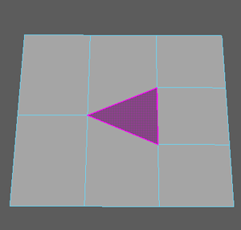
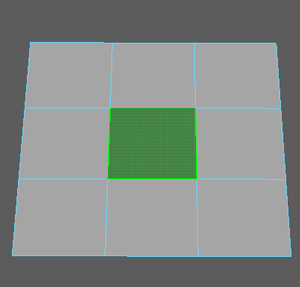

使用四边形绘制填充洞
您可以通过“四边形绘制”(Quad Draw)工具使用四边形或三角形（四边形通常更适用于变形）填充现有网格上的间隙。
使用
“四边形绘制”(Quad Draw)
填充洞
选择网格。
激活
四边形绘制(Quad Draw)
工具。
在按住 Shift 键的同时将光标移动到孔上。
“四边形绘制”(Quad Draw)
工具将进入预览模式。如果要创建的面是三角形，它将以紫色亮显：

但如果要创建的面是四边形，它将以绿色亮显：

按住 Shift 键单击面预览。
此时将显示新面，并填充孔。
相关主题
利用四边形绘制优化拓扑
建模工具包
父主题：
使用“四边形绘制”(Quad Draw)手动创建或重新拓扑网格